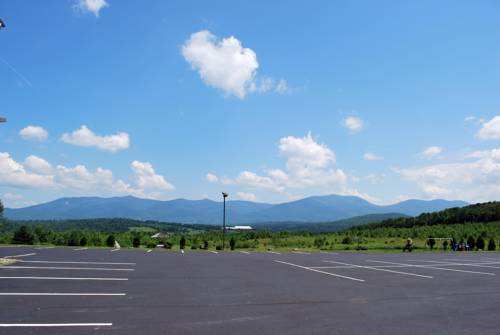

Cabot Inn & Suites
Cabot Inn & Suites
Welome to Cabot Inn & Suites
The Cabot Inn and Suites is a four-season family motel located in the heart of the White Mountains, over-looking the Presidential Range. Our 60 acres offer breathtaking views of the mountains from our rooms and well-groomed grounds. For all winter enthusiasts, bring your snowmobiles and get on to Corridor 5 right from our parking lot. For all you skiers and snowboarders, Bretton Woods, Cannon, Wildcat, Attitash, Loon, Black Mountain and Cranmore ski areas are minutes away.
- Large Indoor Pool, Hot tube, Sauna, Fitness area, Play ground, Game room and Laundry facility.
- Free complimentary continental breakfast, Internet access, local calls and business center.
- Rooms with fridge, coffeemaker, hair dryer, iron-ironing board, flat screen TV, free Wi-Fi, and FM-AM radio.
- For your convenience we offer Ski, Christmas tree and summer packages.
- Great location in the heart of the mountains and beautiful scenic view.
- Near all attractions, family activities, skiing, hiking and sightseeing.
Heated Pool
Great Views
Fitness Center

Things To Do
We also offer packages

Santas Village!
Fri 27 Nov 2019
EnJOY exciting rides & entertaining shows, gingerbread cookies & ‘elfabet' elves, Santa & his reindeer. Get refreshed in our HoHoH2O water park & JOYride water slides. One of the Top 25 Amusement Parks-US (TripAdvisor 2014 & 2015 Travelers' Choice Awards)-the only New England park on the list both years! One low admission includes all features for the entire day, including parking, strollers & more. A tradition, from our family to yours, for over 60 years.Pure Joy. Family Style.
Book Now
Cog Railways!
Sat 28 Nov 2019
Ride to the top of Mount Washington on the world's first mountain-climbing cog railway-built in 1869. Choose eco- friendly biodiesel or historic steam locomotives for a thrilling train ride to New England's highest peak. 3-hour round-trip adventure includes time at the summit and free admission to the Observatory Museum. On-board guided tour provides an entertaining narrative. A unique experience and a must- do when in the White Mountains.
Book NowWhales Tales
Sun 29 Nov 2019
Whale's Tale Water Park was recently voted one of TripAdvisor's Top 25 waterparks in America. With some of the industry's best water attractions, Whale's Tale is the perfect way to spend quality time with your friends and family. Not a thrill seeker? There is something for everyone to enjoy. Toddlers, children, teens and adults of all ages keep busy on our wide variety of industry leading attractions. Spend a great day together as you slide, swim and splash through our world class waterpark-and don't forget to catch the Beachside Bash on the Waveside Stage!
Book NowDirections
Our GPS Points: 44.071041,-71.142709
Phone: 603-788-3346
Email: cabotmotorinn@yahoo.com

- Directions: Notice to GPS Users: Cabot Inn & Suites does not yet appear on some GPS devices. Try: Latitude 44.47337, Longitude -71.54990 or New Hampshire / Attractions / Santa's Village, and we are only 6 miles west on U.S.Route 2.
- From Boston and Areas South: I-93 North to Exit 35 (in New Hampshire), Follow Route 3 North into Lancaster, Turn Right onto Route 2 East, Cabot is on the left about a mile.
- From Quebec and Areas North: I-91 South towards St. Johnsbury (Vermont), Take Route 2 East to Lancaster (Rt. 2 & 3 run together in Lancaster center), go through the town Center, Turn Left onto Route 2 East, Cabot is on left about a mile.
- From Burlington/Montpelier, VT and Areas West: Take Route 2 East to Lancaster, Follow directions from North.
- From Bangor, ME and Areas East: Take Route 2 West to Lancaster, Cabot is on Route 2 Westbound. Guests coming from South and West could also take I-91 North to St. Johnsbury, VT and follow directions above.